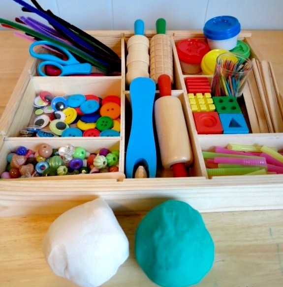
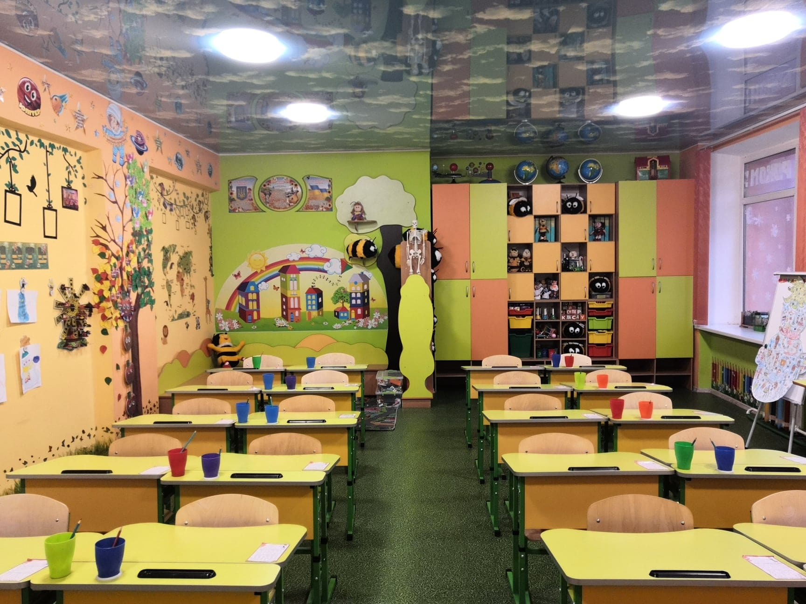
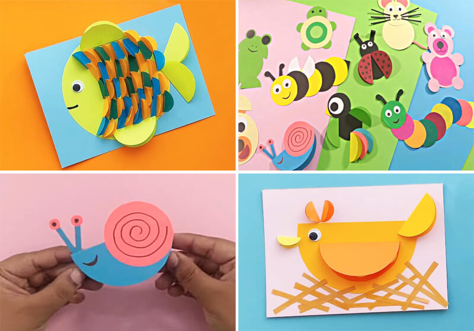

Педагогічна практика та досягнення
Практична підготовка в початковій школі
Під час педагогічної практики я спостерігала за освітнім процесом, готувала конспекти занять, проводила ранкові зустрічі та фрагменти уроків у початкових класах.
Фотогалерея освітніх активностей



Відеоматеріали щодо початкової освіти
Корисний відеоматеріал за темою організації занять та роботи з учнями початкових класів: